180
- Part 2
VII
Social Science
The Foundation
Stones of History
12
Given below is an excerpt from a local history prepared by Anu in the local history
writing competition.
Vizhinjam is situated 15
km away from the south of
Thiruvananthapuram
city.
Since the ancient times, this
coastal region has great historical and
commercial importance. It is mentioned
in the Sangam literature that Vizhinjam
was one of the most important centres
of ancient Tamilakam.
As a port and a centre of trade, this
region holds an important place in the
political, social and economic history of
South India. Stone inscriptions and other
historic documents show that Vizhinjam
was the centre of Ay dynasty of South
India during the 9th and 10th century.
In the interpretation of ‘Leelathilakam’
Attoor Krishna Pisharody has recorded
that the Ay lineage migrated to Vizhinjam
leaving Aykkudi, after being defeated
by the Pandya kings. Vizhinjam has
been referred to as ‘Vijayapuri’ by the
Jain saint Uddyotanasuri in his work,
‘Kuvalayamala.’ There is a reference to
the fort at Vizhinjam in the inscription
of the Pandya king Nedunjeliyan.
In the foreign travelogue titled ‘Periplus
of the Eritrean Sea,’ it is stated that
Vizhinjam was an important port and
trade centre right from the Sangam
period.
Page 68
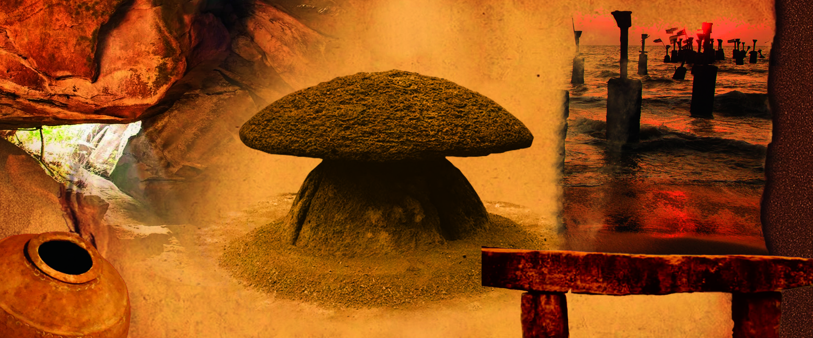

Page 69
181
The Foundation Stones of History
Have you read the write-up on the local history given above? Can you find out the
sources used for preparing this write-up?
l Archaeological evidence
l Inscriptions
l Literary works
l
l
l
l
History is thus, the branch of study that scientifically records the past based on
evidence. Several pieces of evidence that are necessary for reconstructing history
have been left behind in various forms by each period. The writing of history
is the process of collecting these pieces of evidence for scientific analysis and
documenting the past.
In the previous chapter you have discussed the vast Mughal and Vijayanagara
empires and their rulers in medieval India. Unlike the history of such vast empires
and kings, local history is the minute and comprehensive documentation of a small
geographical region, a person or an event.
During the excavations conducted by the
Department of Archaeology, University
of Kerala, the remains of a fort situated
in this area and the nearby places were
found. The name ‘Kottappuram’ is
still there for a place near Vizhinjam.
The remains of Chinese and Roman
vessels, other artifacts and Roman coins
have been discovered from here. These
archaeological findings indicate its
foreign trade relations in ancient times.
The ancient cave temple that is situated
here is an evidence for the antiquity of
this place. We can find places of worship
of different religions in this region
where people of different communities
live harmoniously. Vizhinjam which
was an ancient port, has now become
an important harbour with modern
facilities.
Page 70

182
- Part 2
VII
Social Science
History
Local History
Documents the history of a vast region,
place or country.
A minute level of enquiry of the
history of a small region, subjects or
events apart from World History, the
history of a nation or a province.
History is recorded using written
documents, archaeological evidences
and historical remains.
Local festivals, cuisines, customs,
traditions and oral traditions become a
part of the historical writing.
Assesses past events, cultures and
societies with a broad perspective.
By democratising history, due
representation is given to regions,
peoples and events that have been left
out of main stream history.
Conduct a panel discussion on the topic ‘History and Local History,’
after finding more details.
Sources of History
You have seen that history is written based on various pieces of evidence. Anything
that gives information useful for writing history can be called sources of history.
Any object that is related to a particular period of time giving us valid information
about that period is a source for writing history.
Let’s get introduced to the main sources for writing history.
Archaeological remains
Monuments
Literary works
Travelogues
Newspapers
Official documents
Historical
Sources
Page 71
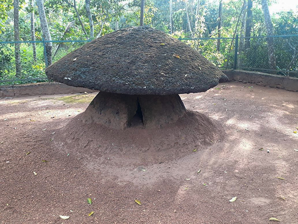


183
The Foundation Stones of History
Archaeological Sources
Archaeological sources provide information or evidence about life in the period in
which they were made. Let us get familiarised with some of them.
Lithic monuments
Coins
Palaces
Ancient Inscriptions
Caves
Archaeological
Sources
Lithic Monuments
Every stone that we see around us has a story to tell. Our ancestors have left here
the remains of many monuments made of large stones.
Look at the pictures given below.
Fig. 12.1
Kudakkallu
Thoppikkallu
Muniyara
These lithic monuments are historical remains found out from different parts of
Kerala. As these were built with huge stones, they are known as Megalithic
monuments. These monuments built by our ancestors tell a lot to us about ancient times.
Page 72

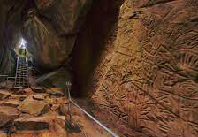


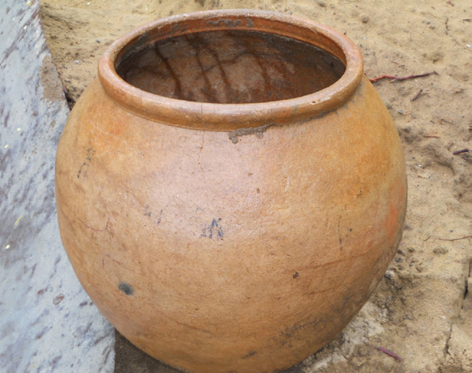
184
- Part 2
VII
Social Science
The remains
of these lithic
monuments were
found at Marayoor
in Idukki district,
Chiramanangad
in Thrissur and
Thavanur in
Malappuram
district. These
were used to bury
the mortal remains of our ancestors.
Caves
Caves throw light on the ancient history of Kerala. In these natural caves, pictures
and inscriptions that refer to human life in the prehistoric period are inscribed.
Some important caves are situated at Edakkal (Wayanad), Marayoor (Idukki),
Aancode (Thiruvananthapuram) and Thenmala and Kottukkal (Kollam). The
Archaeological Survey of India (ASI) and the Department of Archaeology,
Government of Kerala protect the historically important archaeological materials.
Edakkal cave is one of the
important caves in Kerala
used by our ancestors. It is
located 10 km away from Sulthan
Bathery in Wayanad District. The
pictures (engravings) inscribed
on the walls of this cave give
information about human beings
in the stone age and their life.
Edakkal Cave
Fig. 12.3
Do lithic monuments exist in your locality? Prepare a write-up about
a lithic monument you know.
Nannangadis
are
large clay urns used
in the Megalithic
period for burying
dead bodies. In these big
earthen jars mortal remains
are buried and covered
under soil.
Nannangadis
Fig. 12.2
Page 73
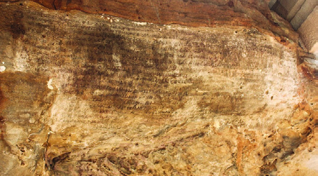
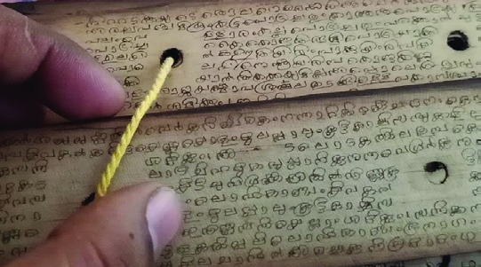
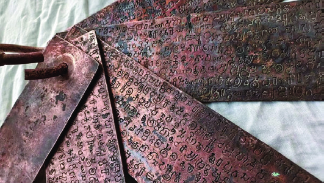
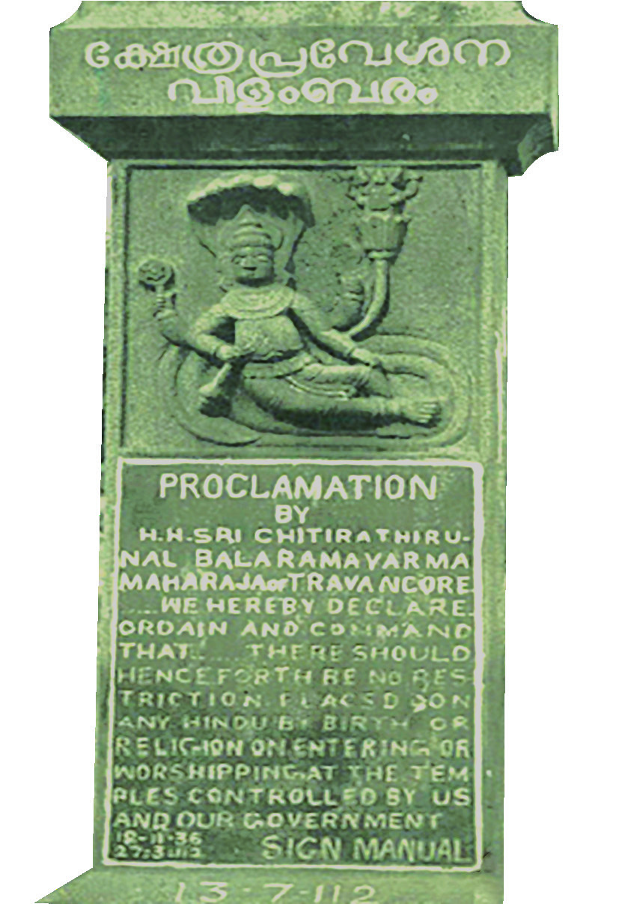
185
The Foundation Stones of History
Ancient Inscriptions
Inscriptions are messages or statements in the form of drawings or engravings on
a surface. They are inscribed on different types of surfaces.
Fig. 12.4
Stones
Palm leaves
Metal plates
Ancient
inscriptions
Several such inscriptions have been found
from different parts of Kerala. Tharisappally
inscriptions (Kollam), Jewish Copper Plate
(Mattancherry) and Paliyam Copper Plate
(Alappuzha) are major inscriptions found in
Kerala. The Kerala State Archives Department
supervises the collection and conservation of
ancient inscriptions in Kerala.
Observe the stone plaque in your school. You might have seen these
types of inscriptions in public buildings and places of worship in
your locality. What information can be obtained from such stone slabs
that helps to write the history of that institution?
Fig. 12.5
Epigraphy
The study of inscriptions on
stones, metal plates and palm
leaves is called epigraphy.
Page 74


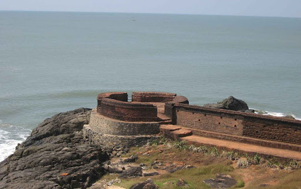
186
- Part 2
VII
Social Science
Forts and Palaces
Forts that were built for the security
of the country, military purposes and
trade can be used as sources for writing
history. Forts give us information on the
different phases of Kerala and its rulers.
Bekal Fort, Kannur Fort, Palakkad Fort
and Anchuthengu Fort are the major
forts in Kerala. Are there similar forts in
your locality?
Like forts, palaces also have historical
importance.
The
names
of
some
important palaces in Kerala are given
below. Expand the list by including the
names of palaces you know.
l Padmanabhapuram Palace
l Mattancherry Palace
l Kilimanoor Palace
l Arakkal Palace
l Krishnapuram Palace
l
l
There may be forts and palaces in your district too. Prepare a short
description on them.
Coins
Coins are important sources of history. They give us information on the economic,
political and cultural history of the period in which they were used. The study of
coins is called Numismatics.
The pictures of coins that were found from different parts of Kerala are given below.
They are known under the names Kasu, Achu, Panam, Anantharayan Panam and
Bekal Fort
Bekal Fort, the biggest
fort in Kerala built in the
17th century, is situated in Pallikkara
village in Kasaragod district. There
are armouries, lattice windows that
open to the sea, spaces to encounter
the enemies who approach from
the sea, secret cellars, hideouts and
water reservoirs in the fort.
Fig. 12.6
Page 75
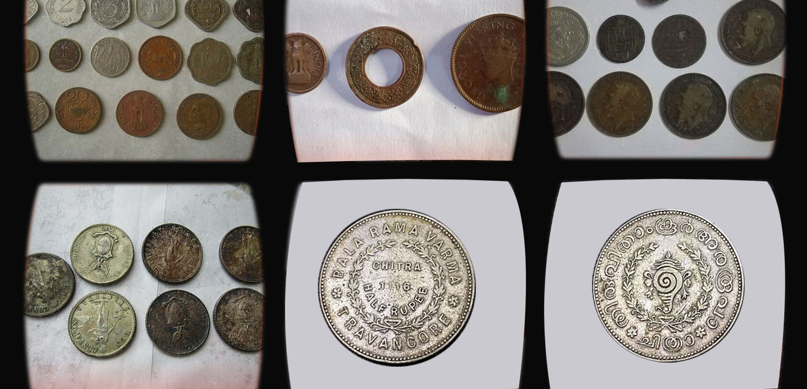


187
The Foundation Stones of History
Sulthan Kasu. What can we learn from these coins issued at different times?
l The period in which the coin was made
l The authorities who made the coins and released them
l
l
l
Fig. 12.7
Veerarayan Panam
Veerarayan Panam was a coin that was popular
during the reign of the Zamorins of Calicut. There
were coins named Old Veerarayan and New Veerarayan.
These coins came into use from 1667 onwards. Foreigners
called these coins ‘ponpanam’ (gold coin) as they were
made of gold. The insignia (naamakuri) used by the
Vaishnavites on their forehead, the sign of the lion, the sun, etc. can be seen
on them.
Conduct a seminar in the class on the topic ‘Archaeological Sources.’
Page 76
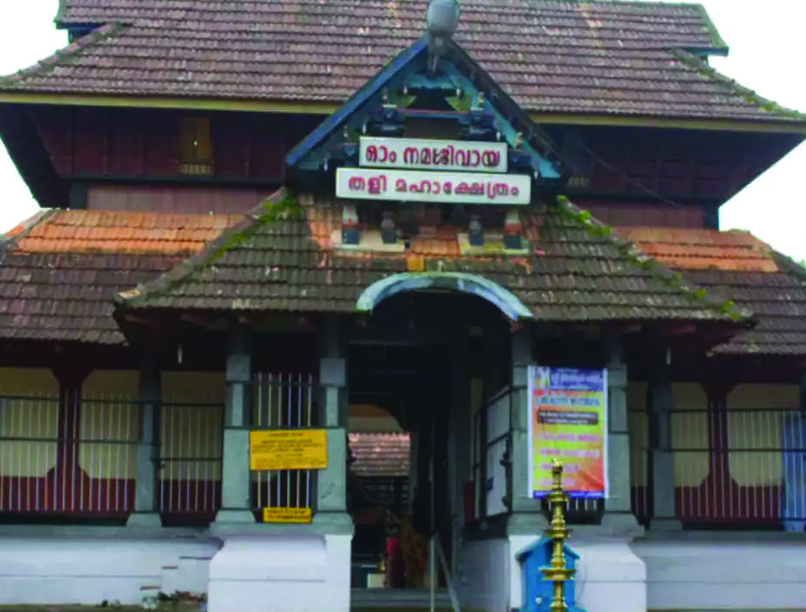


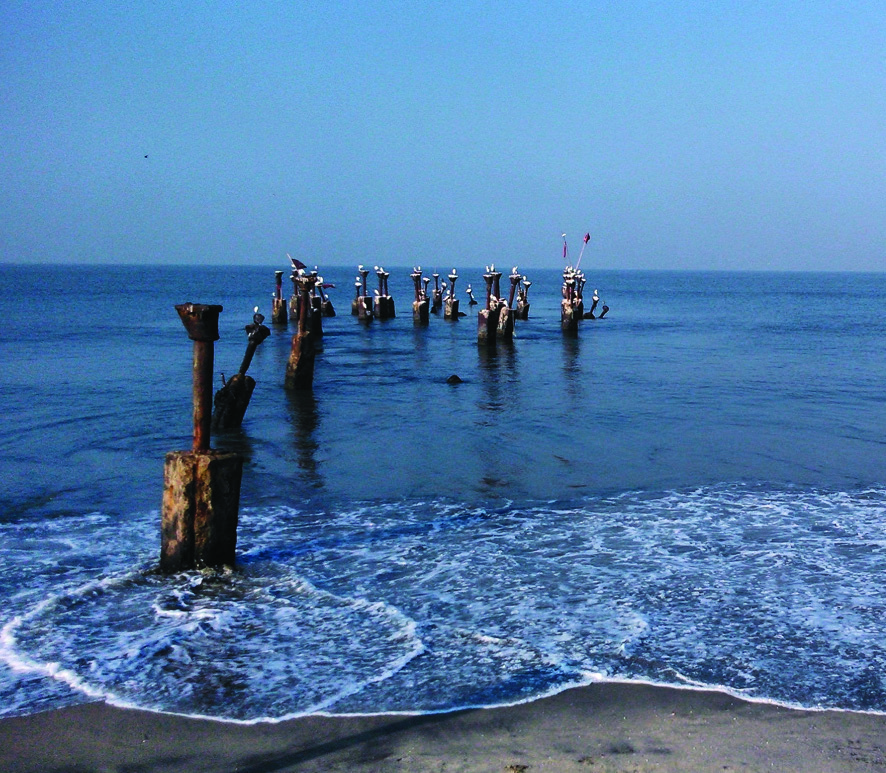
188
- Part 2
VII
Social Science
Historical Monuments
Observe the pictures given below. These are sources that lead us to the economic
and cultural history of a region.
Fig. 12.9
Thali Temple
Mishkal Mosque
Devamatha Cathedral
Sea bridge
These are the pictures of some historical monuments of Calicut. The famous
scholastic assembly named Revathy Pattathanam during the reign of the Zamorin
was conducted at the Thali Temple. Mishkal mosque was the major war spot of
the Zamorin against the Portuguese. The Devamatha Cathedral built in 1513 is a
memorial of the Portuguese presence. Sea bridges are proof of the trade relations
that Calicut had with foreign countries.
Thus, we can see several monuments all over Kerala. Each of such monuments
will tell us the history of the past.
Page 77
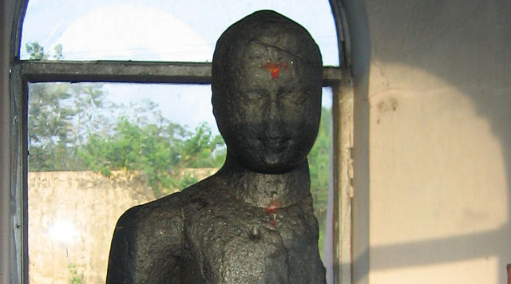
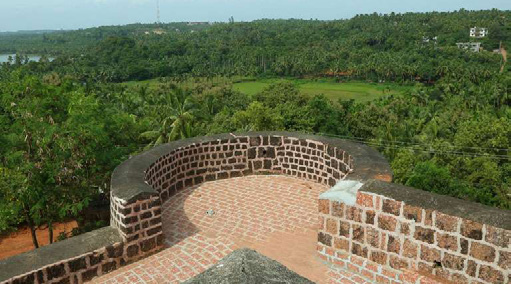
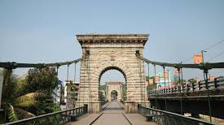
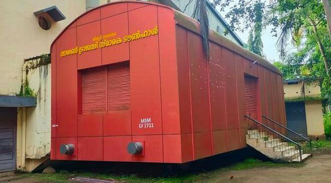
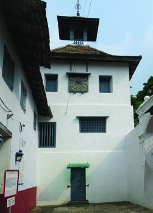

189
The Foundation Stones of History
Karumaadikkuttan Memorial
Suspension-bridge of Punalur
(Thookkupalam)
Synagogue
Chandragiri Fort
Wagon Tragedy Memorial
Historical Monuments
Identify the districts where
the following monuments
are located.
Fig. 12.10
Literary Sources
Literary sources are one of the main sources of history. Many literary works with
different themes help us in the reconstruction of history.
As the marine damsel settled in this city
the mother sea rocked, with her waves,
the ships that carry gems from across the isles
and made them reach Calicut.
- Kokila Sandesam
Read the idea of the sloka
about
Kozhikode
in
the
Sanskrit
poem
‘Kokila
Sandesam’
written
by
Uddanda Sastri in the 15th
century.
Sangam Literature
Sangam literature in Tamil throws
light on the ancient history of
Kerala. Pathittupathu, Purananuru,
Akananuru, Kurumtokai, Nattinai, etc., are
major literary works belonging to the Sangam
period.
Page 78
190
- Part 2
VII
Social Science
Like this, several literary pieces written in different languages during various
periods in history are available. These works help us to understand the history
of the period in which they were written. For example, the Manipravala literary
works written during the 12th century and the 15th century provide us information
on the Naduvazhi system and culture of those times. The Vadakkanpattukal
(Northern Ballads) of Malabar throw light on the lives of common people of the
medieval period. Indulekha written by Chandu Menon in the 19th century helps us
understand the social history of Malabar.
Travelogues
‘Merchant ships from different parts of the world came here with precious
goods and sold them easily. The security measures of the city and maintenance
of law are being conducted effectively. Therefore, traders from foreign
countries have no fear. The entire responsibility of the market is vested with
the King. 1/40 of the goods brought to the market should be paid as tax. No
misappropriation will be done to the goods if a merchant is dead or a ship
capsizes near the shore, with the goods floating around. Pepper is the important
export item from here. The people here are good at maritime business.’
From the travelogue by Persian traveller Abdur Razzaq
Haven’t you read the travelogue given above?
This is a description about Kozhikode port by Abdur Razzaq, a persian traveller
who came to Kozhikode in the 15th century. What can you find out from this
description?
l
l
l
Travelogues play a vital role in the writing of local history. Travelogues can provide
direct experiences of special places, events and culture. This throws light on the
history, geography, economic structure and social life of a region.
Page 79

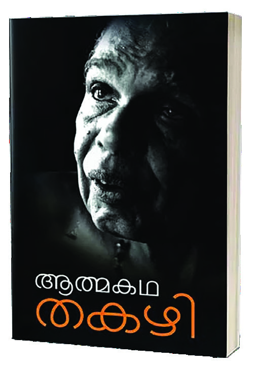
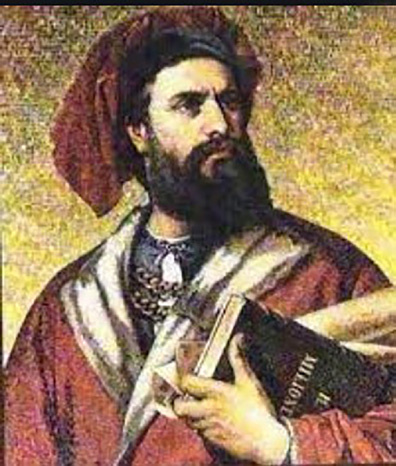
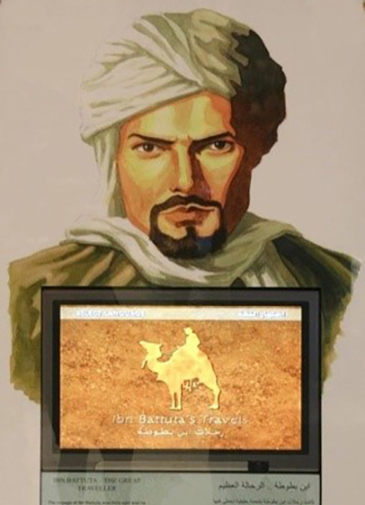
191
The Foundation Stones of History
Some foreign travellers who
mentioned about Kerala
Traveller
Region/Country
Megasthenes
Greece
Sulaiman
Persia
Abdur Razzaq
Marco Polo
Venice
Ibn Battuta
Morocco
Niccolo Conti
Venice
Ma Huan
China
Barbosa
Portugal
Find travel literature from the school library and read the sections
related to Kerala and organise a class discussion.
Autobiographies and Biographies
Most autobiographies and biographies are literary sources that could be used for
the writing of history.
It was when I went to the Ambalappuzha school,
that I wore a shirt for the first time. Two shirts
were stitched with ‘kembiri’ cloth. The practice of
ironing clothes was not there in our locality. The
dhoti was washed by dipping in starch and indigo.
Later, it will be brought to shape by folding it
and hitting with a wooden rod. It seems I wore an
ironed shirt for the first time when I joined Law
College in Thiruvananthapuram. Soap was a rare
thing in those days in Thakazhi. We used to launder
dhoti using the ash of the midrib of coconut fronds,
which were burnt and stained.
[Autobiography of Thakazhi]
Fig. 12.13
Autobiographies and biographies like the one given above provide information on
different aspects of life in a region or a period.
Fig. 12.11
Marco Polo
Fig. 12.12
Ibn Battuta
Page 80


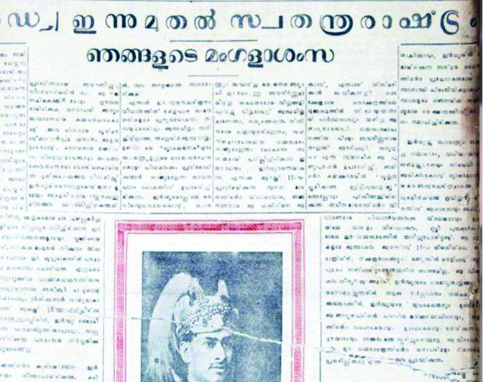
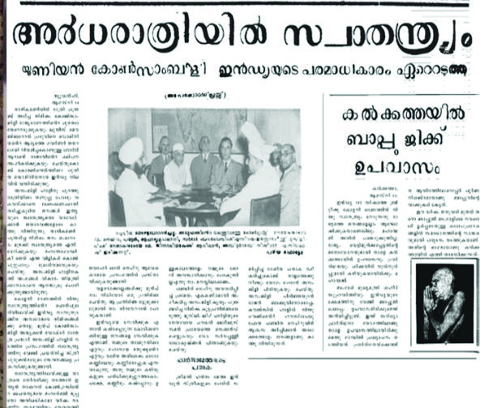
192
- Part 2
VII
Social Science
Examine the autobiographies and biographies available in the class
library and find out the passages helpful for writing history.
Newspapers
We depend on newspapers, visual
media and social media to know
the day-to-day events. These
newspapers
would
eventually
become the main means for
understanding
history.
News
papers of the period are the main
source used by the students of
history to understand the history of foreign rule in India. Newspapers also help us
to know about all aspects of the political, social and economic history of Kerala.
Prepare a magazine collecting news that came in the newspapers on
your locality and the events that happened there.
Towards Writing Local History
Local history is the study of the past events in a specific geographically small area.
The historical resources that we got familiarised with, till now, are significantly
helpful for writing mainstream history. Let’s familiarise with certain sources that
help us in the writing of local history.
Mortgage documents
and deeds
Local knowledge
Rites and rituals
Songs
Official documents
Place names
Family history
Memories (oral traditions)
Observation of the locality
Sources for
Local History
Fig. 12.14
Page 81
193
The Foundation Stones of History
Local Observation
Local history is a minute study of a geographically limited area or an event.
Observing the locality helps us to know the minute details of that region. It is
essential to conduct a local visit and observation to understand the diversities of
area where a local community exists, its geographical features, directions, flora
and fauna, watersheds and agricultural practices.
What other information
can we find for writing
history through local
observation
Food
Clothing
Shelter
Health
Education
Language, Literature
Art
Entertainment
Travel
Communication
Observe the locality where you live, and complete the table given below.
Name of the locality :
Taluk :
Village
:
District :
Types of soil
:
Types of plants
:
Types of animals
:
Agricultural crops :
Types of agriculture :
Occupation
:
Water sources
:
Institutions
:
Transport and
communication
facilities
:
Places of worship :
Festivals
:
Food culture
:
Style of dressing :
Entertainments
:
Literary works
:
Art forms
:
Page 82
194
- Part 2
VII
Social Science
Memories (Oral History)
Oral history is the memories collected from a generation that has direct experiences.
Collecting the memories of the elders of the place chosen for writing local history
is very important. It is essential to have oral descriptions to collect information on
institutions, transport facilities, style of dressing and food culture of a locality, to
write the history of that place. The memories of different persons on these matters
will help in reconstructing history. These memories help us to analyse the practices
that existed in the society and the changes that were effected in due course. It is
essential to verify the oral information collected, with other sources, to ensure
credibility.
Prepare the table on regional data after consulting the elders in your
family/locality.
Old
New
Name of the locality
Institutions
Occupation
Agriculture
Style of dressing
Food culture
Transportation facilities
Place Names
How did your locality get its name?
How did Kozhikode get its name? The old name was ‘Koyilkotta’ which was a
combination of two names ‘Koyil’ and ‘Kotta.’ ‘Koyil’ means ‘palace’. The name
Koyilkotta means, ‘a palace protected with a fort.’ Historians say that this was
later changed to ‘Kozhikode.’ Look at the names of places like Thrissur, Kannur,
Thalassery and Thankassery. We can find names of places ending with ‘Ur’ or
‘Chery’ across Kerala. Geographical features also play a major role in the formation
of names of places.
Page 83

195
The Foundation Stones of History
Search the way in which your locality got its name, prepare notes and
add the same to School Wiki.
Family History
The history of families is an important literary source in local history writing. It is
the responsibility of the local historian to collect information on the interventions
or contributions made by individuals to the growth and progress of a village or a
region after ensuring the credibility of the information.
Official Documents
Observe the description given below.
“The Salt Law Breached”
The Salt Law introduced by the British was breached under the leadership of a
large multitude of people on 17th May, 1930 on the Calicut beach. The Gujaratis
of Calicut actively involved in this. The satyagraha volunteers from Travancore
also joined. The protestors staged a procession, calling out anti-British slogans
after distilling seawater and making salt. They even kept with them the materials
needed for making salt. The police encountered the volunteers brutally who
participated in the Salt Satyagraha organised on the beach. P. Krishna Pillai and
Abdul Rahman Sahib made legendary defence to protect the freedom struggle flag
from the police.
(HFM files, No. 103, Tamil Nadu State Archives, Egmore)
This document kept in the Tamil Nadu Archives throws light on the freedom
struggle of Kerala. What are the details mentioned in this document?
The following are the important official documents.
l Census reports
l Gazette documents
l Court documents
l Survey reports
l Tax documents
l Police reports
l Development Report of local self-government institutions
Page 84

196
- Part 2
VII
Social Science
It is through court documents that we can understand the details of the struggles and
riots against the British colonisation. We rely on census reports to understand the
population and the different sections of people of a particular geographical region.
Mortgage Documents and Deeds
The mortgage or lease documents and deeds are beneficial for writing local history.
From these, we get information on personal details, private properties, etc.
Observe the deed document/lease document of your property and
note down the details.
Local Knowledge, Songs, Rites and Rituals, Art Forms
Local knowledge, songs, rites and rituals are the sources that are helpful for writing
local history. Songs that refer to the trade in local markets and trading centres refer
to the specialties of the area.
" Kooran, Chozhan, Pazhavari, Kurakkonganam, Vennakkannan
Modan, Kadan, Kuruva, Kodiyan, Panki, Ponkali, Chennel,
Anakkodan, Kiliyira Kanangariyan Veeravithan,
Kanaam mattum palavidhamudan nellu kalyanakeerthe "
Unnineeli Sandesam
Which are the regional varieties of paddy seeds referred to in these lines?
Local history is the writing of history using sources like memories, songs, proverbs,
stories, folk commentaries, notices and invitations, in addition to archaeological
documents and historical monuments. The overall life-style of the region and
day-to-day life are referred to in the local history. It is the direct reflection of the
society with which each of us is connected. We can write local history using the
above mentioned sources.
Local History Writing: Things to Be Noted
Physiographic Features
The accurate geographical boundaries and
natural features (mountain, river, watershed) of
a place should be there in the history writing
when it is selected for writing local history.
Page 85
197
The Foundation Stones of History
Historical monuments
There should be reference to the places of
habitation, megaliths, stone inscriptions, forts,
places of worship, and the like.
Occupation/
Means of living
There should be indications about the main crop
that is cultivated in the area, handicraft, trade
centres, health and medical services.
Survival models
Analysis of withstanding issues such as torrential
rains, drought, epidemics, eviction and poverty
should be included.
Cultural institutions
Details regarding education, women’s education,
libraries, etc., of the area should be discussed.
Land relations
Details of agricultural tie ups, feudal system
and old statistics should be included.
Patriotism
There can be references to the political
movements, national movements and personalities
of national importance of the area.
Local self-government
bodies and development
The local self-government bodies and their
developmental activities of the region should be
included.
Bibliography
Bibliography is an important factor that ensures
the authenticity of history writing. This is a
detailed list of all sources used for writing
history. The bibliography is usually given at the
end of the study.
Local History Writing – Structure
l Title
l Content/Declaration of the student
l Certificate
Page 86

198
- Part 2
VII
Social Science
l Acknowledgement
l Introduction
l Chapters
l Conclusion
l References
(names of those who were interviewed, places visited, institutions, etc.)
l Appendices (photos, songs, questionnaire)
l Bibliography
Local history writing helps us in retrieving our lost culture. Finding the changes
that continuously happen in life, formulating ways to future plans and sharing the
future generations a detailed information of the history of the place are the aims of
writing local history.
Extended Activities
l Write the history of your area by collecting and analysing the necessary details,
based on the sources referred to in the chapter.
l Conduct a debate with the local historians and those who are interested in
writing the local history of your place.
l Prepare a description after visiting the historical monuments or palaces of your
area.
l Collect ancient and modern coins of different countries and prepare an album
after identifying the period, country and other features.
l Prepare the history of your school and add it to School Wiki.
Page 87
CONSTITUTION OF INDIA
Part IV A
FUNDAMENTAL DUTIES OF CITIZENS
ARTICLE 51 A
Fundamental Duties- It shall be the duty of every citizen of India:
(a) to abide by the Constitution and respect its ideals and institutions,
the National Flag and the National Anthem;
(b) to cherish and follow the noble ideals which inspired our national struggle
for freedom;
(c) to uphold and protect the sovereignty, unity and integrity of India;
(d) to defend the country and render national service when called upon to do so;
(e) to promote harmony and the spirit of common brotherhood amongst all the
people of India transcending religious, linguistic and regional or sectional
diversities; to renounce practices derogatory to the dignity of women;
(f)
to value and preserve the rich heritage of our composite culture;
(g) to protect and improve the natural environment including forests, lakes, rivers,
wild life and to have compassion for living creatures;
(h) to develop the scientific temper, humanism and the spirit of inquiry and reform;
(i)
to safeguard public property and to abjure violence;
(j)
to strive towards excellence in all spheres of individual and collective activity
so that the nation constantly rises to higher levels of endeavour and
achievements;
(k) who is a parent or guardian to provide opportunities for education to his child or,
as the case may be, ward between age of six and fourteen years.
Page 88

• Right to freedom of speech and
expression.
• Right to life and liberty.
• Right to maximum survival and
development.
• Right to be respected and accepted
regardless of caste, creed and colour.
• Right to protection and care against
physical, mental and sexual abuse.
• Right to participation.
• Protection from child labour and
hazardous work.
• Protection against child marriage.
• Right to know one’s culture and live
accordingly.
• Protection against neglect.
• Right to free and compulsory
education.
• Right to learn, rest and leisure.
• Right to parental and societal care,
and protection.
Major Responsibilities
• Protect school and public facilities.
• Observe punctuality in learning
and activities of the school.
• Accept
and
respect
school
authorities, teachers, parents and
fellow students.
• Readiness to accept and respect
others regardless of caste, creed or
colour.
Dear Children,
Wouldn’t you like to know about your rights? Awareness about your rights will inspire
and motivate you to ensure your protection and participation, thereby making social
justice a reality. You may know that a commission for child rights is functioning in our
state called the Kerala State Commission for Protection of Child Rights.
Let’s see what your rights are:
Kerala State Commission for Protection of Child Rights
'Sree Ganesh', T. C. 14/2036, Vanross Junction
Kerala University P. O., Thiruvananthapuram - 34, Phone : 0471 - 2326603
Email: childrights.cpcr@kerala.gov.in, rte.cpcr@kerala.gov.in
Website : www.kescpcr.kerala.gov.in
Child Helpline - 1098, Crime Stopper - 1090, Nirbhaya - 1800 425 1400
Kerala Police Helpline - 0471 - 3243000/44000/45000
Contact Address:
Online R. T. E Monitoring : www.nireekshana.org.in
CHILDREN'S RIGHTS